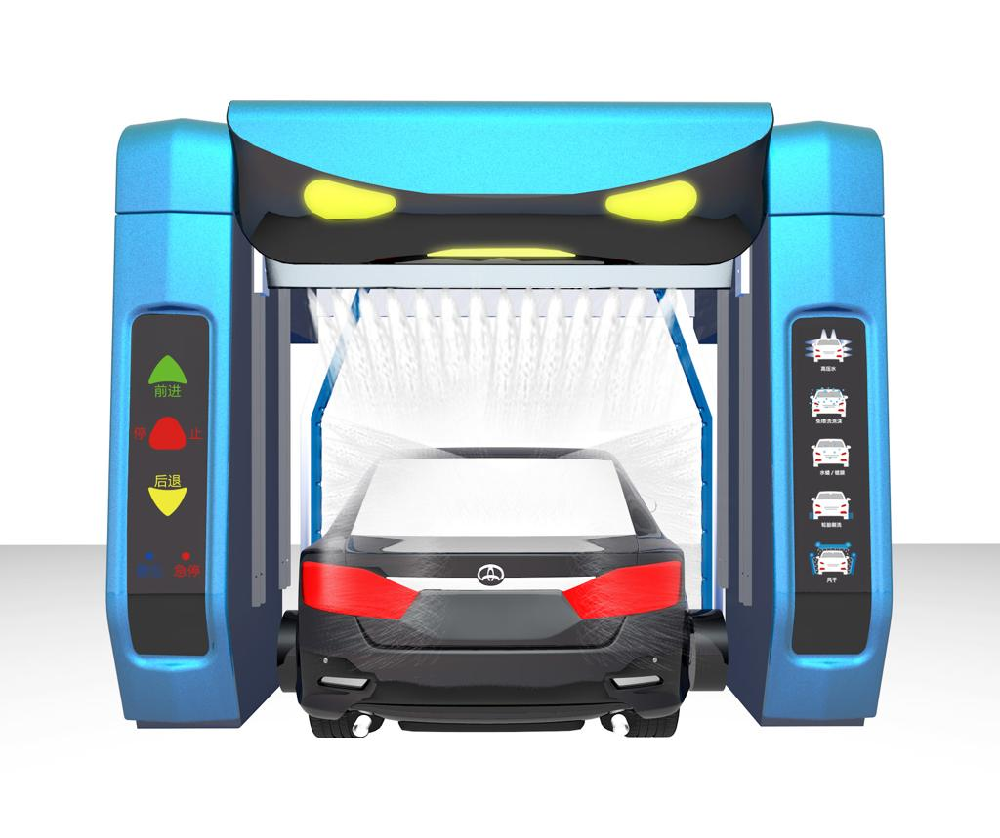
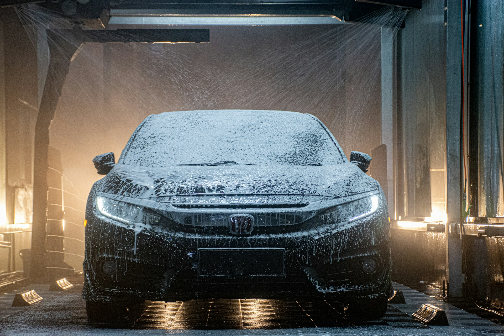
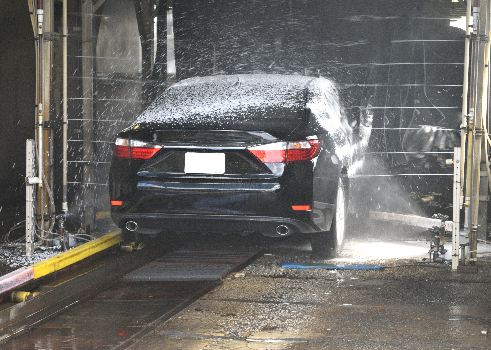

Lavado de autos
Beneficios :
- mantener el coche
- Más limpio para el coche
- Ahorra tiempo solo cinco minutos
- Prevención de la oxidación del coche
- Amable y mantener la prueba.
- Facilidad de pago y uso.
- Lavandería en cualquier momento 24/7
Datos técnicos
| No. | Descripciones de funciones | Detalles de la marca | Observaciones |
|---|---|---|---|
| (1) | El nivel de protección del agua es IP67 | Servomotor Delta de Taiwán | Alemania pinfl |
| (2) | Puede mostrar una variedad de modos de lavado de coches, indicación de estacionamiento, visualización de fallas, visualización de estado, etc. | Motor de secado al aire impermeable Sino-Intlund |
Japón NSK Alemania PEPPERL+FUCHS |
| (3) | Detectar con precisión la posición del cuerpo, determinar el rango de limpieza | Sistema de servomotor Delta de Taiwán Pantalla LCD Delta de Taiwán Pepperl+Fuchs Alemania |
Francia Schneider Delta de Taiwán |
| (4) | Controlar con precisión la cantidad de espuma, solución coloreada sin enjuague y cera de revestimiento de agua | Sensor fotoeléctrico ultrasónico P+F Pepperl+Fuchs P+F Japón Relé Omron Francia Schneider | Delta de Taiwán |
| (5) |
1. Espesor de hasta 4mm, 2. Norma internacional Q235, 3. Prueba de niebla salina, grado diez 4 mm, Q235 |
Contactador taly nueva bomba dosificadora de líquido Dotz marco de acero galvanizado en caliente boquilla de acero inoxidable 416 alta resistencia | Alemania PEPPERL+FUCHS |
| (1) | Tipo HP-260 (lavado de coches sin contacto 360) | HP-260 (ESTÁNDAR) | Especificaciones: Modelo |
| 1.1 | Descripciones / Lavado de coches sin contacto 360 |
LXLXH=3300mm*1100mm*1000mm LXLXH=8180mm*3680mm*3500mm LXLXH=2500mm*1600mm*2000mm |
Dimensiones de la máquina ESPACIO DE INSTALACIÓN ESTACIÓN DE ALIMENTACIÓN Potencia principal Potencia total Presión del agua |
| 1.2 | Sistemas inteligentes sin conductor | Trifásico 380 V 50 Hz | Llegada de aire |
| 1.3 | Tecnología inteligente 360. | Máx: 18,5 kw ; funcionamiento máximo: 18,5 kw 70-120Bar |
Tipo de vehículo Tamaño de lavado |
| 1.4 | Sistema de mezcla química inteligente. | coche/SUV/Coatch en 10 asientos LXWXH=2300mm*2500mm*2050mm | Velocidad de lavado |
| 1.5 | Sistema de suspensión innovador, rieles sin resistencia | Lavado rápido: 3'12", Premium | Consumo de energía |
| 1.6 | Sistema de secado rápido integrado único | 0.65kwh | productos químicos |
| 1.7 | Sistema de alarma de seguridad vocal digital | 7ml/12ml | consumo |
| 1.8 | Sistema de autoverificación defectuoso Sistema anticongelante de una tecla | 165L | consumo de agua |